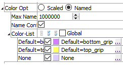

颜色选项
颜色选项属性是一个容器，根据主字段中选择 缩放 还是 命名，它会呈现两种形式之一。这两种形式如下。
缩放颜色选项控件

此颜色选项用于将绘制等值线的项，即使用按数值范围索引的有序颜色集着色。提供标准的 等值线 属性。详情请参见标准 等值线（Contour） 控件的说明。
命名颜色选项控件

此颜色选项用于通过颜色加以区分（但不按比例缩放）的项。其主要控件是标准的 Color_List 属性（参见标准 颜色列表（Color-List） 控件的说明）。
最大名称数：指定要使用的最大名称数，以及相应的最大唯一颜色数。如果存在更多的唯一名称，则它们被赋予名称 未知 并统一用一种颜色着色。
名称控件：指定是否存在名称或颜色控件。当存在大量唯一名称（或颜色）时，为每种颜色提供控件会大幅降低渲染性能。取消勾选此选项后，可以高效地渲染大量唯一颜色。
颜色列表：设置列表中的哪些项被显示。该字段依次包含“全不选”、“全选”和“反选”按钮。若勾选，“全局”会使当前的颜色与标签配对用于所有绘图（例如，如果希望所有绘图中的分组名称都使用某个特定且一致的颜色，此设置就很有用）。此字段也是列表中各项的容器。
[项]：显示（勾选）该项（其标签字段为 [项]）。使用色板控件设置该项颜色。设置按钮（…）可用于为该项设置“别名（alias）”。颜色色板之后会以只读方式显示当前别名。
| 这些内容对您有帮助吗？… | FLAC3D © 2019, Itasca | 原文更新于 2020 年 10 月 8 日 |